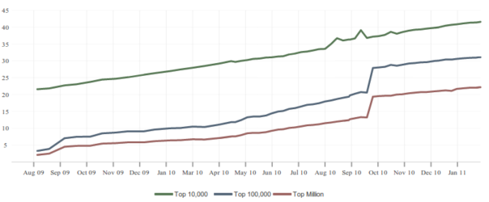
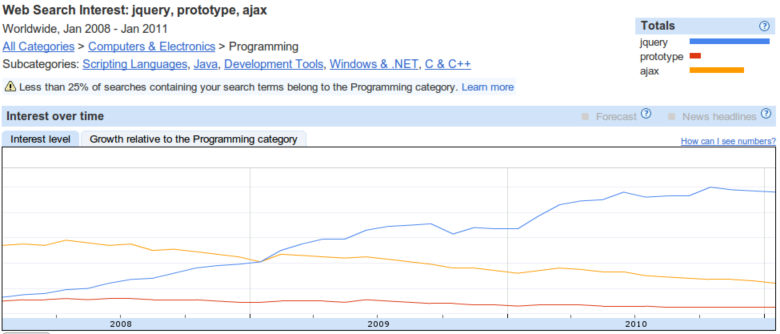
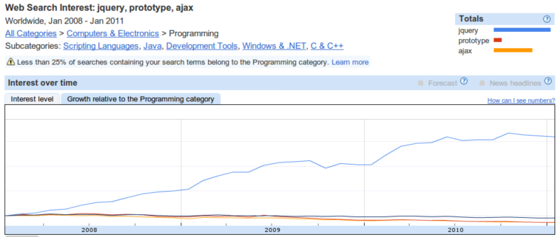
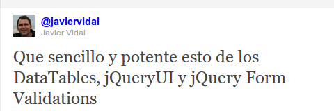
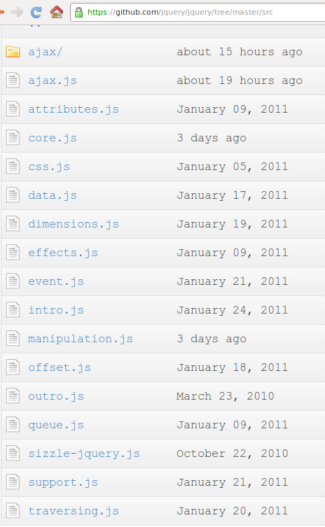
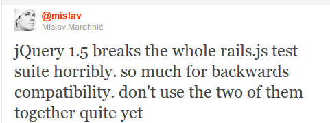
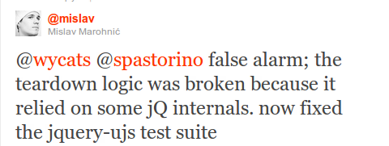

jQuery API
chain methods
$("div").addClass("redbox")| space, → | next slide |
| ← | previous slide |
| d | debug mode |
| ## <ret> | go to slide # |
| c | table of contents (vi) |
| f | toggle footer |
| r | reload slides |
| z | toggle help (this) |






$("div").addClass("redbox")
$("div").addClass("redbox").fadeOut();$(...).html();
$(...).html("<p>Hello!</p>");
$(...).html(function(i){
return "<p>Hello " + i + "</p>";
});jQuery('css selector');
$('css selector');
jQuery(function(){
// executed when DOM ready
})
$.sub(); // New in 1.5$.expr.filters.withRel = function(elem){
return ($(elem).attr('rel') !== undefined);
};
$("clase:withRel");$("input").attr("id"); // returns id
$("input").attr("id", "email"); // sets id to email
$("input").attr("id", function(){ return this.name });
$("input").removeAttr("id");
// HTML5 data attributes
$("input").data("disable-with")$(".comment").addClass("read");
$(".comment").removeClass("read");
$(".comment").toggleClass("read");// returns the selected option value
$("select").val();
$(".comment:first").html()$("div").parents();
$("div").siblings();
$("div").next();
$("div").prev();
$("div").closest("a");$("#content").append("<p>Hi everyone!</p>");
$("<p>Hi everyone!</p>").appendTo("#content");
$("#content").prepend("<p>Hi everyone!</p>");
$("<p>Hi everyone!</p>").prependTo("#content");$("body") [body]
.find("p") [p, p] => [body]
.find("a") [a, a] => [p, p] => [body]
.addClass("foo")
.end() [p, p] => [body]
.end() [body]$("p").mouseover(function () {
$(this).css("color","red");
});
$("span").click(function () {
$(this).css("background-color","yellow");
});
$.cssHooks // You want superpowers$("li").bind("click", function(){
alert("You clicked me!")
});
// Event binding shortcut
$("li").click(function(){
alert("You clicked me!")
});
// fire events
$("li:first").click();
$("li:first").trigger("click");$.ajax({
url: "test.html",
success: function(data){
$("#results").append(data);
}
});$.get()
$.post();
$.getJSON();
$.getScript();
$(...).load();$.extend();
$.map();
$.merge();
$.noop();
$.proxy();
$.parseJSON();var empty = {}
var defaults = { validate: false, limit: 5, name: "foo" };
var options = { validate: true, name: "bar" };
var settings = $.extend(empty, defaults, options);
settings == { validate: true, limit: 5, name: "bar" }
empty == { validate: true, limit: 5, name: "bar" }function sum(x, y){
// antipattern: implied global
result = x + y;
return result;
}
function sum(x, y){
var result = x + y;
return result;
}
// follow Single var pattern// antipattern
myname = "global";
function func(){
alert(myname);
var myname = "local";
alert(myname);
}
func();// antipattern
myname = "global";
function func(){
alert(myname); // "undefined"
var myname = "local";
alert(myname); // "local"
}
func();
myname = "global";
function func(){
var myname;
alert(myname); // "undefined"
myname = "local";
alert(myname); // "local"
}
func();var zero = 0;
// antipattern
if (zero == false) {
// this block is executed
}
if (zero === false) {
// not executed
}

Es muy importante conocer como trabajan los selectores para poder ir llevando acabo mejoras de rendimiento o para utilizar las opción con mejor rendimiento directamente en cada caso
var parents = $(".parents");
// antipattern the re-query
var children = $(".parents").find(".child")var parents = $(".parents").doSomething().doSomethingElse();//without chaining/caching
$("#notification").fadeIn('slow');
$("#notification").addClass('activeNotification');
//with chaining
$("#notification").fadeIn('slow')
.addClass('activeNotification');<ul class="first">
<li class="foo">list item 1</li>
<li>list item 2</li>
<li class="bar">list item 3</li>
</ul>
$('ul.first').find('.foo').addClass("red")
.end().find('.bar').addClass("green");
$('ul.first').find('.foo')
.addClass('red')
.end().find('.bar')
.addClass('green')
.end();myContainer.append("<li>John Resig</li><li>Paul Irish</li>")var table = $("#some-table");
var parent = table.parent();
table.detach();
table.addLotsAndLotsOfRows();
parent.append(table);$("#item").data(key, value);
// much faster
$.data('#item', key, value)// slow!
$("#menu a.submenu").each(
function(index){
$(this).doSomething().doSomethingElse();
});
// Better!
$("#menu a.submenu").doSomething().doSomethingElse();$('.class').bind('click.namespace', function(){});
$('.class').trigger('click.namespace'); // will trigger
$('.class').trigger('click'); // will trigger
$('.class').trigger('click.other'); // won't trigger
$('.class').unbind('click.namespace');
$('.class').unbind('.namespace');